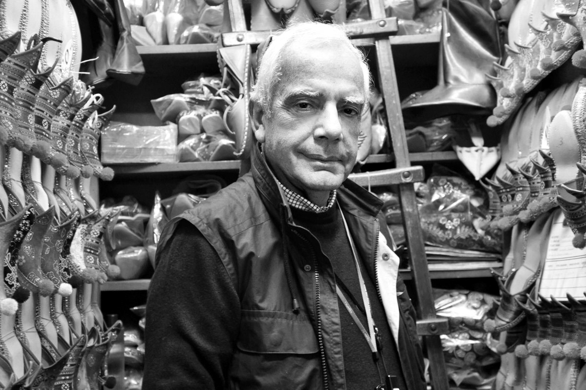

İzzet Keribar: Türkiye Fotoğraf Sanatının Usta İsmi

Fotoğraf sanatının Türkiye’deki gelişim sürecinde önemli rol oynayan isimlerden biri olan İzzet Keribar, yarım asrı aşan üretimi, özgün bakış açısı ve uluslararası başarılarıyla çağdaş Türk fotoğrafçılığının en saygın temsilcileri arasında yer alır. Bu yazıda, İzzet Keribar’ın yaşam öyküsünü, sanatsal yaklaşımını ve fotoğraf dünyasına katkılarını detaylı biçimde inceleyeceğiz.
Hayatı ve İlk Yılları
İzzet Keribar, 1936 yılında İstanbul’da doğdu. Fotoğrafa olan ilgisi genç yaşlarda başladı. Henüz lise yıllarında fotoğraf makineleriyle tanışan Keribar, kısa sürede bu alanın yalnızca bir hobi değil, aynı zamanda güçlü bir ifade biçimi olduğunu fark etti.
1950’li yılların sonunda fotoğrafla daha ciddi biçimde ilgilenmeye başlayan sanatçı, dönemin önemli fotoğraf çevreleriyle temas kurarak kendini geliştirdi. Özellikle Türkiye’de fotoğrafın kurumsallaşmasında önemli rol oynayan İstanbul Fotoğraf ve Sinema Amatörleri Derneği (İFSAK) ile kurduğu bağ, onun sanat yolculuğunda belirleyici oldu.
Fotoğrafla Profesyonel Yolculuğu
İzzet Keribar, kariyerinin ilk dönemlerinde siyah-beyaz fotoğraflarla tanındı. Zamanla renkli fotoğrafın anlatım gücünü keşfederek bu alanda da güçlü işler üretmeye başladı. Özellikle:
- Doğa ve manzara fotoğrafları
- Kent yaşamı
- Seyahat fotoğrafçılığı
- Kültürel belgesel çalışmalar
Keribar’ın üretiminde öne çıkan başlıklar oldu.
Sanatçının fotoğraflarında en dikkat çeken özellikler şunlardır:
- Güçlü kompozisyon
- Doğal ışığın ustaca kullanımı
- Renk uyumuna verdiği önem
- Sade ama etkileyici anlatım
Onun kareleri çoğu zaman “sessiz ama güçlü” bir görsel dil taşır.
Uluslararası Başarıları ve Ünvanları
İzzet Keribar, yalnızca Türkiye’de değil, uluslararası fotoğraf çevrelerinde de saygınlık kazanmıştır. Dünyanın pek çok ülkesinde sergiler açmış, yarışmalarda ödüller almıştır.
Sanatçıya verilen en prestijli unvanlardan biri, Fédération Internationale de l’Art Photographique (FIAP) tarafından verilen EFIAP (Excellence FIAP) unvanıdır. Bu unvan, fotoğraf sanatında uluslararası düzeyde üstün başarı gösteren sanatçılara verilir.
Keribar ayrıca Türkiye’de fotoğrafın yaygınlaşması ve sevilmesi için:
- Eğitimler vermiş
- Jürilikler yapmış
- Sergiler düzenlemiş
- Fotoğraf kitapları yayımlamıştır
Fotoğraf Anlayışı ve Sanatsal Duruşu
İzzet Keribar’ın fotoğraf yaklaşımını anlamak için onun görsel diline yakından bakmak gerekir. Keribar’a göre fotoğraf:
“Anı yakalamaktan çok, o anın ruhunu hissettirme sanatıdır.”
Sanatçının çalışmalarında şu prensipler öne çıkar:
- Işığın Peşinde Bir Fotoğrafçı: Keribar, günün farklı saatlerinde ışığın değişimini sabırla gözlemlemesiyle bilinir. Özellikle gün doğumu ve gün batımı tonlarını ustalıkla kullanır.
- Minimalist Anlatım: Kadrajlarında gereksiz kalabalıktan kaçınır. Az öğeyle güçlü etki yaratmayı hedefler.
- Evrensel Görsel Dil: Fotoğrafları yerel unsurlar taşısa da evrensel bir estetik anlayış sunar. Bu da onun uluslararası başarısının temel nedenlerinden biridir.
Yayınları ve Sergileri
İzzet Keribar, kariyeri boyunca çok sayıda kişisel ve karma sergiye imza atmıştır. Ayrıca fotoğraf sanatına kalıcı katkı sağlayan kitaplar yayımlamıştır. Bu yayınlar, hem görsel arşiv niteliği taşır hem de genç fotoğrafçılar için önemli bir referans kaynağıdır.
Başlıca çalışmalarında:
- Türkiye’nin doğal güzellikleri
- Dünya şehirleri
- Kültürel miras
- İnsan ve yaşam temaları
öne çıkar.
Türk Fotoğrafına Katkıları
İzzet Keribar’ın en büyük etkilerinden biri, Türkiye’de fotoğrafın bir sanat dalı olarak algılanmasına yaptığı katkıdır. Onun çalışmaları sayesinde:
- Renkli fotoğrafın sanatsal değeri daha geniş kabul gördü
- Seyahat fotoğrafçılığına ilgi arttı
- Yeni kuşak fotoğrafçılar için güçlü bir referans oluştu
Bugün Türkiye’de fotoğrafla ilgilenen pek çok isim, doğrudan ya da dolaylı olarak Keribar’ın açtığı yoldan ilerlemektedir.
Sonuç
İzzet Keribar, disiplinli üretimi, estetik duyarlılığı ve uluslararası başarılarıyla Türk fotoğraf tarihinin yaşayan en önemli ustalarından biridir. Yarım asrı aşan sanat hayatı boyunca yalnızca etkileyici kareler üretmekle kalmamış, aynı zamanda fotoğraf kültürünün Türkiye’de kökleşmesine de büyük katkı sağlamıştır.
Onun fotoğrafları bize yalnızca gördüğümüz dünyayı değil, o dünyanın içindeki ışığı, zamanı ve duyguyu da gösterir. Bu yönüyle İzzet Keribar, fotoğrafın evrensel dilini en yalın ve en güçlü biçimde konuşabilen sanatçılardan biri olmaya devam etmektedir.